Eco-Thor
Puerta acorazada de gama económica
La gama económica de la serie Thor: puerta acorazada con 10 puntos de cierre, refuerzo de chapa en toda la cerradura y chapa galvanizada anticorrosión.
- 10
- Puntos de cierre
- Galvanizada
- Chapa anticorrosión
- Thor
- De la misma serie
¿Sabes las medidas de tu hueco? Te explicamos cómo tomarlas.
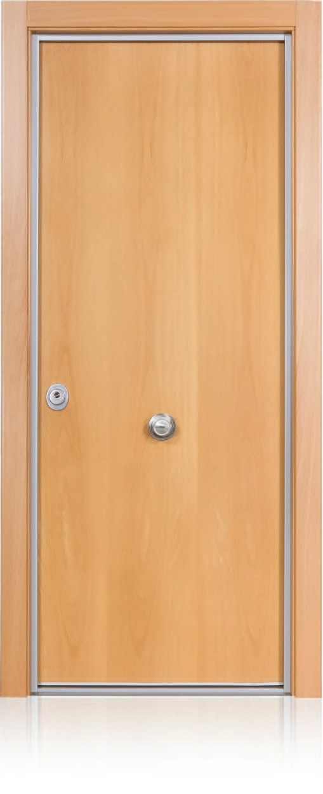
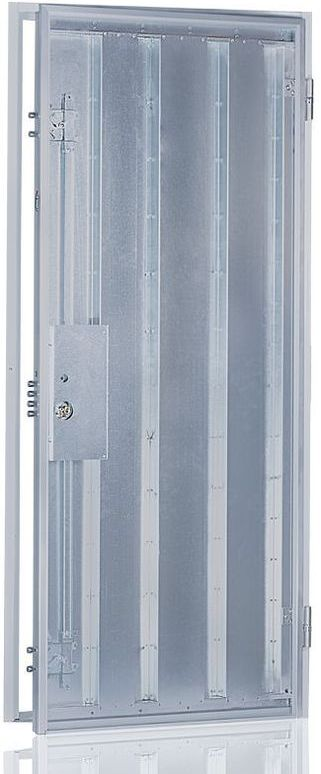
Así está hecha por dentro
Baja para desmontarla pieza a pieza.
DeslizaEco-Thor
La gama económica de la serie Thor: 10 puntos de cierre contando la cerradura y las antipalancas.
Block con marco de acero
Chapa galvanizada de 1,5 mm forrada de vinilo, con regulador de resbalón.
2 desviadores de dos bulones
Con sistema antirretroceso: 8 puntos de cierre junto con la cerradura.
Tablero y perfil de aluminio
Perfil cromado, dorado o negro.
Chapa galvanizada
Hoja de acero galvanizado anticorrosión.
Cerradura de bombillo
Con refuerzo de chapa galvanizada en toda la cerradura.
Omegas de refuerzo
Perfiles de chapa soldados a la hoja de arriba abajo.
Bombillo Mauer Elite 2 Red Line
Antitaladro, antibumping y antiextracción.
2 bisagras de seguridad
Con rodamientos y regulables en 3D.
2 antipalancas
En el lado de las bisagras.
Medidas
Estándar de 202 x 83, 205 x 86, 205 x 92 y 207 x 90 cm. La instalamos en toda Asturias.
Características y opciones
Puerta acorazada
ECO-THOR, gama económica de la serie Thor, es la última puerta en incorporarse a nuestro catálogo de acorazadas. Fabricada para cubrir un mercado donde calidad y seguridad estén al alcance de cualquier bolsillo. Una puertacon todas las garantías de una gran puerta acorazada, con cerraduras de alta seguridad, protectores de última generación y elementos que la convierten en segura y fiable. Máximas prestaciones a un precio muy accesible.
- 10 puntos de cierre, incluyendo la cerradura y los antipalancas
- Refuerzo de chapa galvanizada en toda la cerradura
- Chapa galvanizada anticorrosión
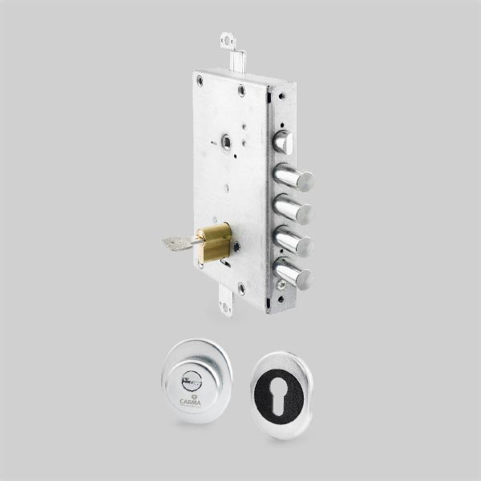
Cerradura de bombillo 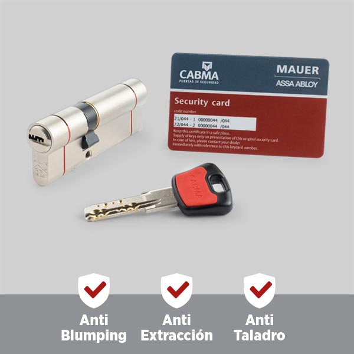
Bombillo Mauer Elite 2 Red Line, anti-taladro / anti-bumping / anti-extracción 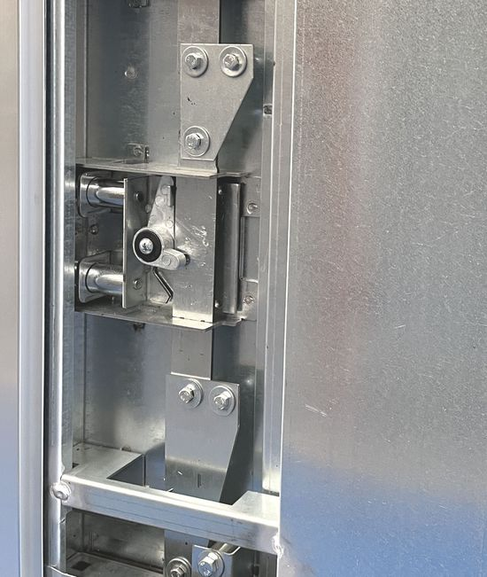
2 desviadores de dos bulones con sistema antirretroceso, lo que hace un total de 8 puntos de cierre incluyendo la cerradura 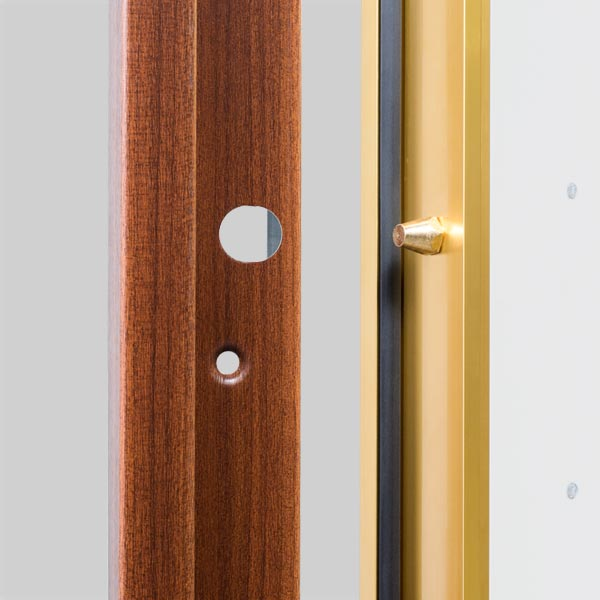
Dos antipalancas 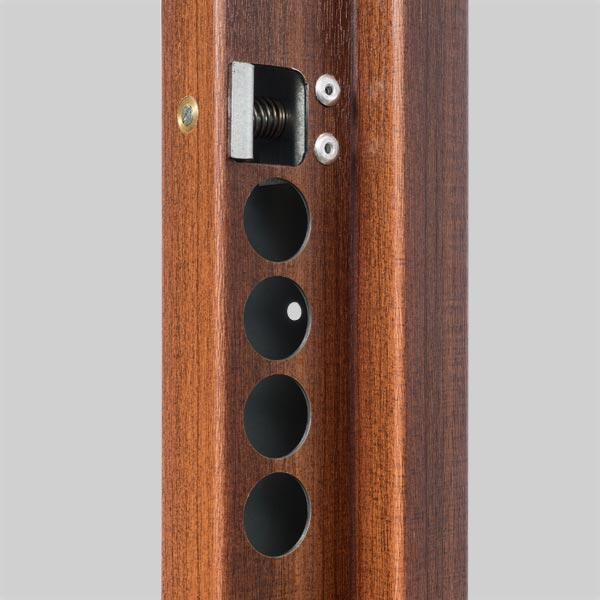
Regulador de resbalón en el marco 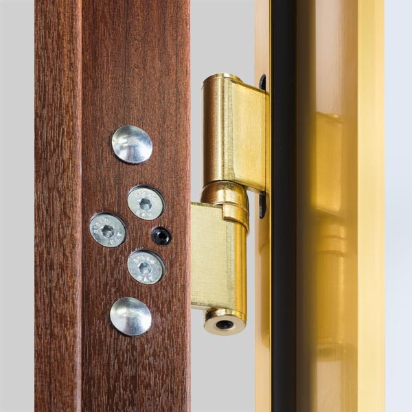
2 bisagras de seguridad con rodamientos, regulables en 3D 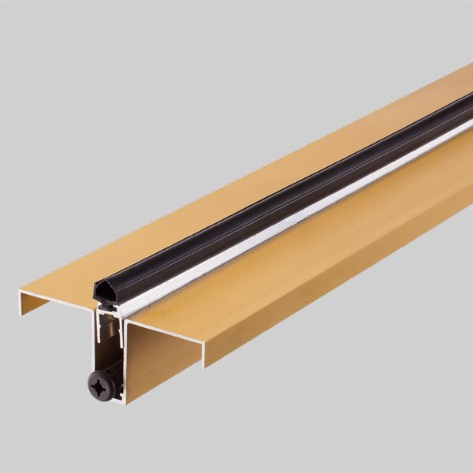
Cepillo cortavientos 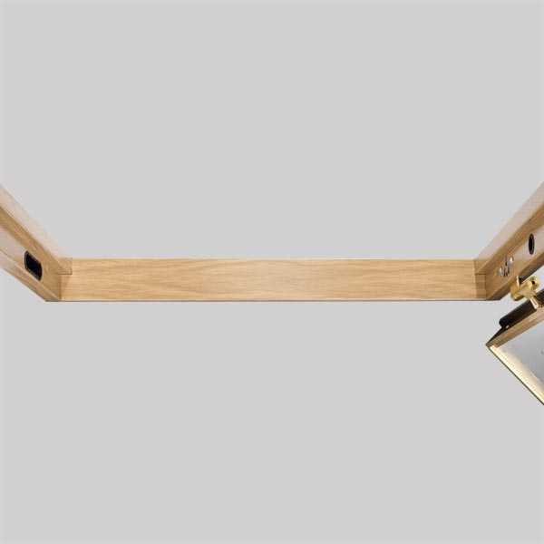
Tapa ancha 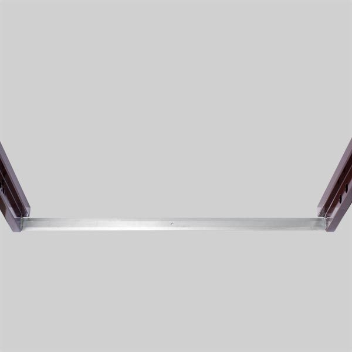
Tapa mini
Acabados
Marco de la puerta de chapa de acero galvanizada de 1,5 mm, forrado de vinilo imitación maderas (sapelly, roble, haya y nogal) o colores lisos (gris inox, gris antracita, blanco y negro).
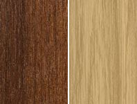
Sapelly // Roble 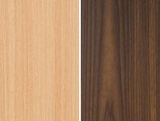
Haya // Nogal 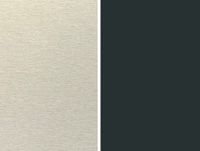
Inox // Antracita 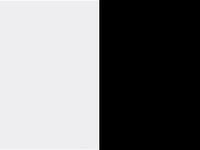
Blanco // Negro
Perfil de aluminio
Acabados
Cromado, dorado y negro.
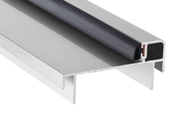
Cromado 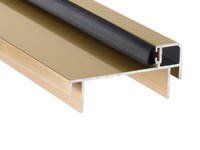
Dorado 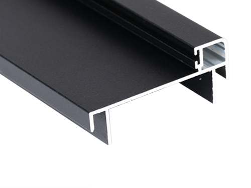
Negro
Medidas y otras características
MEDIDAS (Consultar medidas especiales)
| Estándares totales de Block | Paso real |
|---|---|
| 202 x 83 cm. | 73 cm. |
| 205 x 86 cm. | 76 cm. |
| 205 x 92 cm. | 82 cm. |
| 207 x 90 cm. | 80 cm. |
Otras puertas
Si quieres compararla, estas son las más cercanas. Compárala con ellas


Ven a verla en persona
En nuestra sede de Gijón te enseñamos las puertas CABMA y te asesoramos sin compromiso.
- Dónde estamos
- Camino de la Xacona, 40
33392 Gijón (Asturias) - Teléfono
- 985 053 052
 Pulsa para ver la ruta
Pulsa para ver la ruta